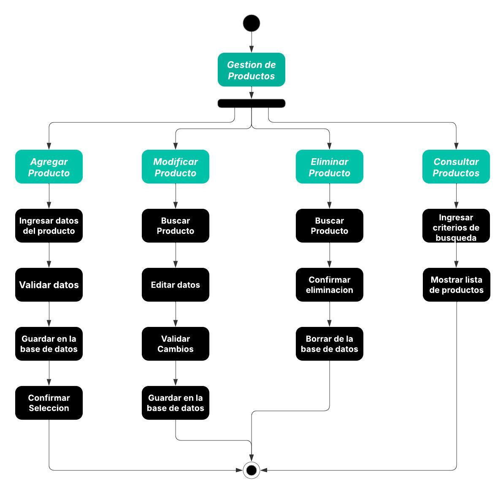

Diagramas de Clases
A continuación, se presentan los diagramas de clases del Sistema de Gestión de Inventarios:
Diagrama de Clases General del Proyecto
.png)
Diagrama de Clases Modulo Pedido
.png)
Diagrama de Clases Modulo Producto
.png)
Diagrama de Clases Modulo Usuario

Diagramas de Actividades
A continuación, se presentan los diagramas de actividades del Sistema de Gestión de Inventarios:
Diagrama de Actividades Gestion de Pedidos
.jpeg)
Diagrama de Actividades Gestion de Usuarios
.jpeg)
Diagrama de Actividades Gestion de Productos
Diccionario de Conceptos de UML
| Concepto | Definición |
|---|---|
| Caso de Uso | Representación de una funcionalidad específica del sistema vista desde la perspectiva del usuario. |
| Actor | Entidad (persona, sistema o dispositivo) que interactúa con el sistema en un caso de uso. |
| Diagrama de Casos de Uso | Representación gráfica de los casos de uso y los actores que los ejecutan. |
| Diagrama de Clases | Representación de las clases del sistema, sus atributos, métodos y relaciones. |
| Clase | Plantilla que define los atributos y métodos de un objeto en UML. |
| Objeto | Instancia de una clase con valores específicos para sus atributos. |
| Atributo | Propiedad o característica de una clase. |
| Método | Comportamiento o función que puede ejecutar un objeto de una clase. |
| Encapsulamiento | Principio que restringe el acceso a los atributos y métodos de una clase para proteger la integridad de los datos. |
| Abstracción | Proceso de modelado donde se identifican las características esenciales de una entidad sin considerar los detalles específicos. |
| Herencia | Relación entre clases donde una subclase hereda atributos y métodos de una superclase. |
| Polimorfismo | Capacidad de un método o función de comportarse de diferentes maneras según el objeto que lo implemente. |
| Diagrama de Actividades | Representación del flujo de trabajo dentro de un sistema. |
| Diagrama de Secuencia | Representación del intercambio de mensajes entre objetos en un escenario específico. |
| Diagrama de Estados | Modelo que representa los diferentes estados por los que pasa un objeto y las transiciones entre ellos. |
| Asociación | Relación entre dos o más clases en UML. |
| Agregación | Relación entre clases donde una clase contiene a otra, pero ambas pueden existir independientemente. |
| Composición | Relación entre clases donde una clase depende completamente de la otra y no puede existir sin ella. |
| Multiplicidad | Indica el número de instancias que pueden participar en una relación entre clases. |
| Modelo de Dominio | Representación conceptual del sistema en términos de clases y sus relaciones. |
| Entidad | Representa un objeto con identidad propia en el sistema. |
| Interfaz | Define un conjunto de métodos que deben ser implementados por una clase. |
| Diagrama de Componentes | Representa la estructura de implementación del software en términos de módulos o componentes. |
| Diagrama de Despliegue | Representa la distribución física de los componentes del sistema en el hardware. |
| Dependencia | Relación en la que una clase usa o depende de otra sin ser propietaria de ella. |
| Diagrama de Objetos | Representa instancias específicas de las clases en un punto del tiempo. |
| UML | Lenguaje de modelado estándar para describir sistemas orientados a objetos. |
| Persistencia | Capacidad de un objeto para mantener su estado más allá de la ejecución de un programa. |
| Sistema de Gestión de Inventarios | Aplicación diseñada para controlar el flujo de productos en un almacén o empresa. |
| Validación de Documentos | Proceso de revisión y corrección de artefactos en el desarrollo de software para asegurar su calidad y coherencia. |
Glosario de Gestión Tecnológica
| Término | Descripción |
|---|---|
| Escalabilidad | Capacidad de un sistema para aumentar su rendimiento o capacidad al agregar más recursos, como servidores o usuarios. |
| Disponibilidad | La medida de tiempo que un sistema está operativo y accesible para los usuarios. |